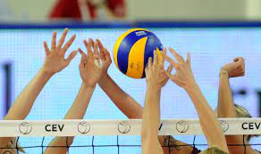

Odbojka je vrsta timskog i olimpijskog sporta gde se lopta udara rukom preko mreže na protivničku stranu. Tim čine šest igrača gde svako ima svoju funkciju. Tim se sastoji od tehničara, korektora, dva primača, srednjeg blokera i libera. Tehničar je mozak ekipe i on uvek stoji u blizini mreže. Blokeri takođe stoje kod mreže i njihova uloga je da blokiraju protivnički smeč. Korektor smečuje, a primači i libero primaju servis. Moderna odbojka se igra na tri dobijena seta, do 25 poena. Kada i jedna i druga ekipa imaju po dva dobijena seta, igra se peti set, tzv. TAJ-BREJK do 15 poena. U timu je 12 igrača, ali je samo 6 na terenu. Ostali su na klupi, oni su zamene. Libero nikada ne servira.
Vilijam Morgan je zapisan kao stvoritelj odbojke, koju je originalno nazvao „mintonet“. Morgan je diplomirao na Koledžu Springfild gde je upoznao Džejmsa Nejsmita, koji je 1891. godine izmislio košarku. Godinu dana nakon što je diplomirao, Morgan je otišao u Holjok, gde je dobio mesto direktora fizičkog vaspitanja. To mesto mu je omogućilo direktan uticaj na vežbe za rekreaciju i razvoj sporta.
U našu zemlju odbojku je 1924. godine doneo g. Vilijam Vajland, profesor folklora i narodnih sportova iz Ouklenda (Kalifornija), kada je u organizaciji Crvenog krsta održao niz predavanja i demonstracije američkih sportova u Beogradu i Novom Sadu. Veruje da je njegov dolazak označio početak odbojke na ovim prostorima, a 1924. se smatra za godinu kada je prvi put došao odbojkaška lopta došla u Srbiju. Odbojkaški sport je bio poznat našoj javnosti i pre ovog događaja, ali javna utakmica sa zvaničnim odbojkaškim pravilima nije mogla biti održana ranije. Ipak, pre Drugog svetskog rata nije postojalo organizovano takmičenje u našoj zemlji. Odbojka je predstavljala jednu od vežbi i dopunski sport u okviru Sokolskih društava, koja je u to vreme jedina praktikovala. Odbojkaška takmičenja sokolskih društava igrana su po župama, kao Župska prvenstva. Nezvanično, odbojku su igrali studenti na fakultetima, učenici po višim školama i gimnazijama, kao i članovi raznih gimnastičkih društava. U vreme, odbojka nije zahtevala skupe rekvizite i posebne uslove za pravljenje terena, tako da je ovaj sport bio dosta razvijen i igrao se po letovalištima, plažama, parkovima itd.
